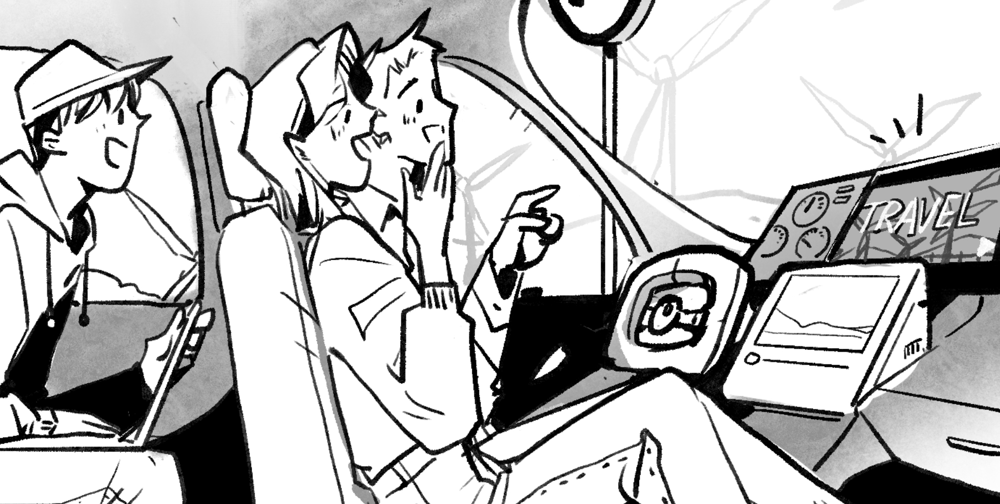
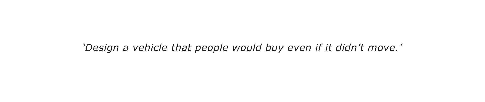
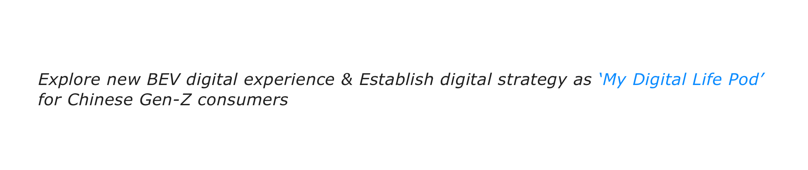
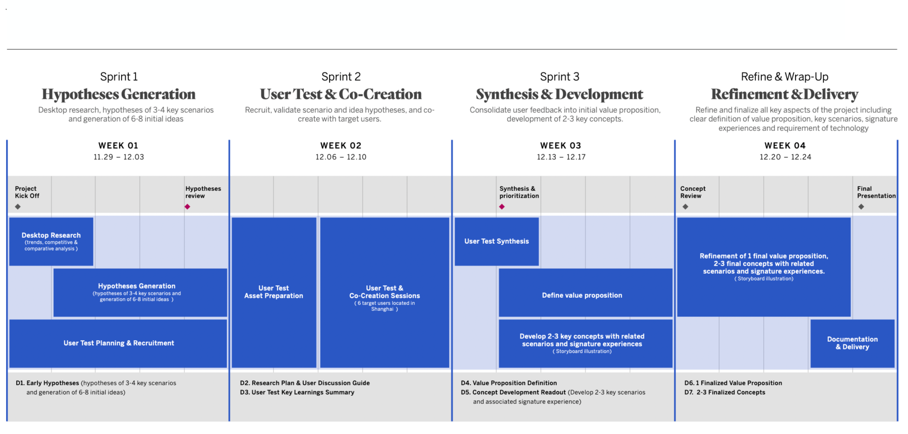
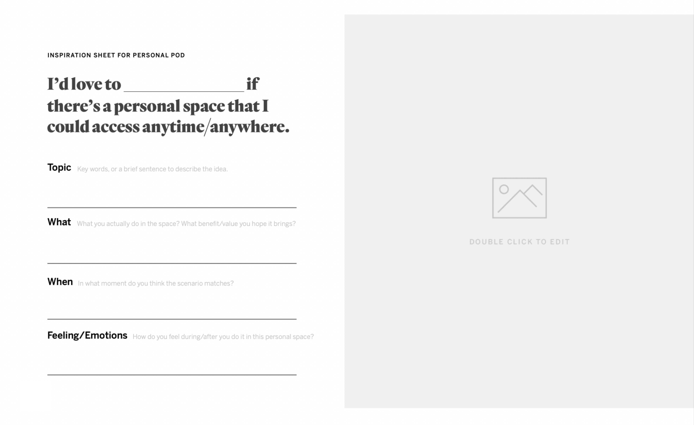
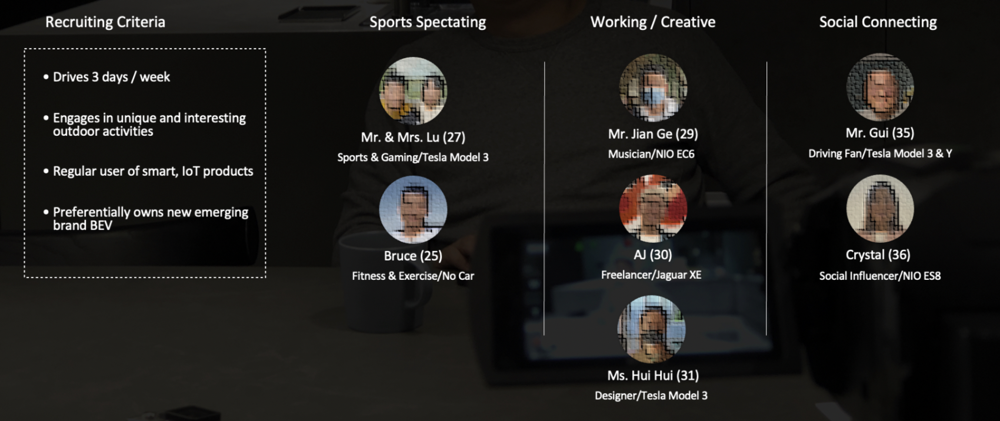
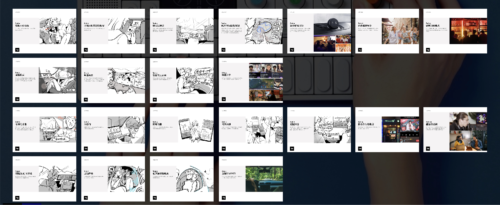
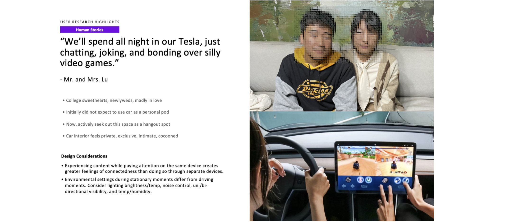
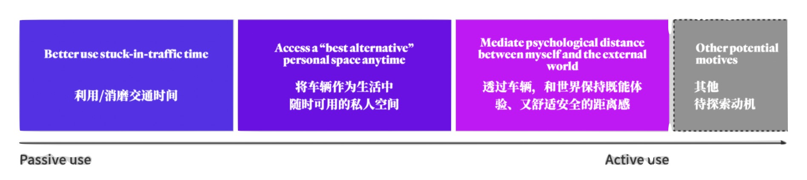
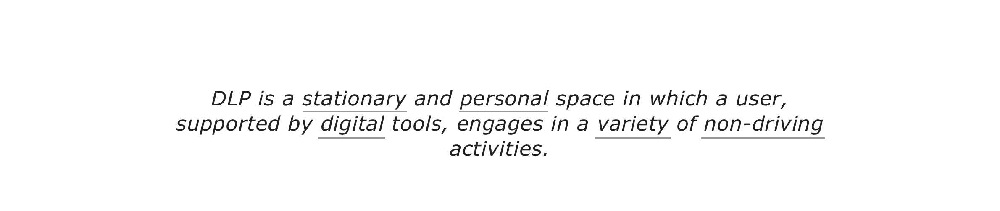

Digital Life Pod
I was inhouse lead designer working with Frog - Design Strategy, Design Research, Innovation
DLP is the digital design strategy that enables our BEVs to break away from the BEV competition, creating Halo and unique experience.

Strategic Motivation
We got an interesting statement from leadership:

BEV and ICE vehicles today are still primary driving vehicles, with digital stuffed into it. Most are focused on painpoints for the driving experience. This is important but has limited degrees of freedom to differentiate, everyone is doing this.
Therefore, we started exploaration based on this initial objective.
Goal
After catch-ups with stakeholders and leadership, we defined our goal and success criteria of the project:

- 3 weeks to explore a new BEV digital experience concept under the umbrella idea of “Digital Life Pod”
- Design a fundamentally different interior experience for which “people would buy even if it didn’t move.” Focus on stationary moments.
- Target audience is China’s Gen-Z, consistent to Mustang / Lincoln's core segment description
- We want believable concepts, rooted in an understanding of real people, that allows Ford to “break-away” from the BEV pack and create a halo factor.
Additionally, we need to bear the impact, feasibility and sustainability in mind.
Work Plan

Sprint 01 Hyphthesis Generation
- Activities:
- Desktop Research: Conduct secondary research into target segment to understand their lifestyle and behavior.
- Hyphthesis Generation: Begin early ideation from the beginning of the project, in order to rapidly build a portfolio of scenarios and ideas to bring into user test/co-creation sessions for feedback.
- User Test Plnning and Recruitment: Define research objectives, hypotheses, and research themes to focus the user test in Sprint 2.
- Deliverables:
- Early Hyppthesis: Hypotheses of 3-4 key scenarios and 6-8 initial ideas are generated during Sprint 1 with the mid-fidelity storyboard illustrations. These hypotheses will be taken into user test session to be discussed, evaluated, and co-created.

We hosted a workshop with all the stakeholders at Ford. An assignment was given to everybody to describe a personal space that they desire. The results were very interesting and inspiring which led us to a good starting point to the next stage.

Sprint 02 User Test and Co-Creation
- Activities:
- User test asset preparation: After setting the reseach plan, we prepared assets for the fieldwork, ensuring each session is fully prepared.
- User test and co-creation sessions: We conducted daily debriefing sessions after each day of interviews to identify key learnings, early insights, and check if there are any modifications needed to the research plan/protocols.
- Deliverables:
- User test key learnings summary: detailed research report containing all aspects related to the set up and the results of the user test - includes but not limited to process and methodologies, participant profiles, user insights, hypotheses feedback, key design opportunities, and design and experience principles/requirements.
We conducted a qualitative research through interviews with 7 users who have unique lifestyles.

- Through the research, we seek to understand:
- People's needs and behaviors within a few specific personal space scenarios.
- User's conceptions and desires for a personal space within a vehicle.
- User's reactions toward specific hypothesized DLP concepts.
We created 22 visual stimuli for user interview:

Through the research, we've had further insights on the development of DLP. Previous hypothesis were as well evaluated and refined.


Sprint 03 Synthesis and Development
- Activities:
- User test synthesis: Organize and distill raw data from field research, including notes, quotes, and statistics, to identify and clarify common themes, behavioral patterns, attitudes and values, and potential opportunities. Insights emerge from connecting these patterns with an understanding of human experiences.
- Key concepts development: Develop 5 concepts, each composed of a specific scenario and an associated signature experience.
- Value Proposition definition: Based on the findings from field research, as well as other contextual information, propose and develop a description of the relationship between the needs of the target consumers and the benefits of our products or services.
- Deliverables:
- Value proposition definition: One unifying value proposition, articulating the positioning and benefit of Ford digital experience against the needs of target consumers, delivered consisting of an overall value proposition message and mapping of product benefits to consumers’ needs.
- Concept development readout: For each concept, description of the contextual scenario and associated signature experience using an illustrated storyboard, conveying consumers’ functional interactions, brand experience, and emotional reactions.
Where we've landed:

What do we mean by Digital life Pod, and how does it different from a 'normal car'?
- Insulation to create a feeling of privacy.
- Modularity to support a variety of activities.
- Ergonomics for the right body movements.
- Personalization for me/our time.
- Digital tools to enable the whole experience.
And as a deliverable, we set 5 themes for DLP, along with 30+ innovative in-car digital experience for furthur development onto vehicles.